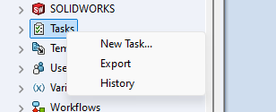
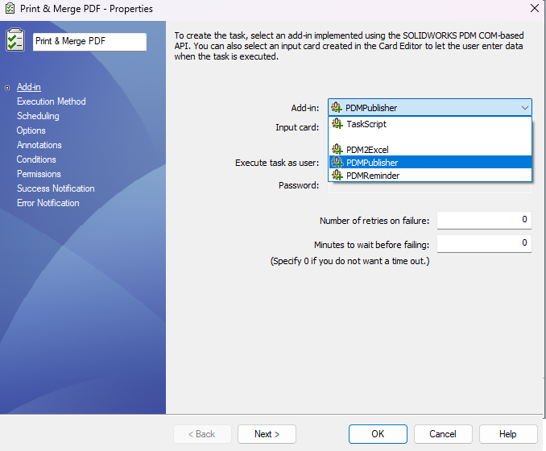
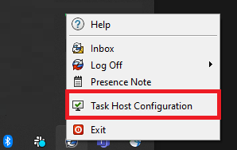
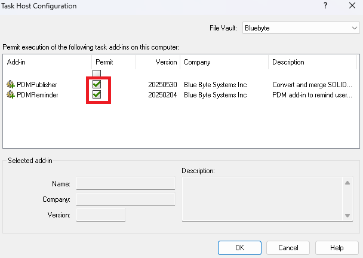
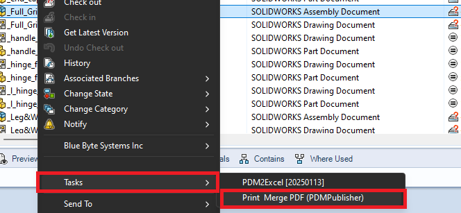
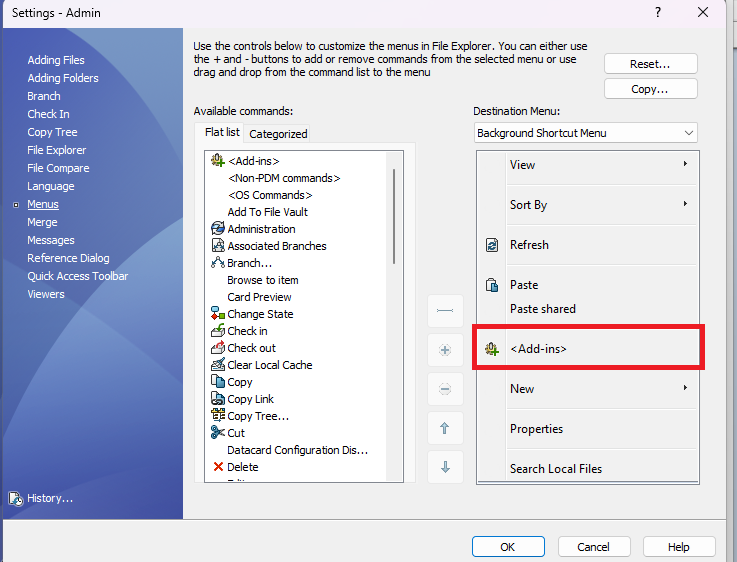
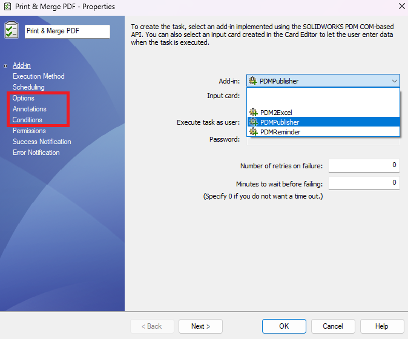

Setting your first task
Note
This article requires that:
- PDMPublisher has been added to your vault.
- you can have activated your license. Follow instructions in this article to do that.
Your first task
To create a new task with PDMPublisher:
Right-click on Tasks in the Administration tool and click New task...

Choose a unique name for the task.
Choose PDMPublisher from the dropdown in the first page of the task setup dialog like below:

Configure the Execution Method page to allow which computers in your organization's network to run the task.
If the computers list is empty, right-click on the SOLIDWORKS PDM icon in the icon tray to access the Task Host Configuration.

You must permit PDMPublisher in the Task Host Configuration dialog.

Configure the three setup pages:
- Options
- Annotations
- Conditions
Click OK to save your task.
Your task will be accessible from the right-click menu Under Tasks in your vault's File Explorer:

Warning
If you do not see the Tasks menu in File Explorer, it is possible that your PDM user setting have been configured to hide add-ins. You can configure the user settings dialog in the Administration tool:

Setup Pages

| Tab | Description |
|---|---|
| Options | Options define how files will be printed. See the options page for more details. |
| Annotations | Defines aliased notes that can contain text and datacard variables and define their locations in the drawing. |
| Conditions | Defines which files to include in the save queues when processing top-level assemblies. |